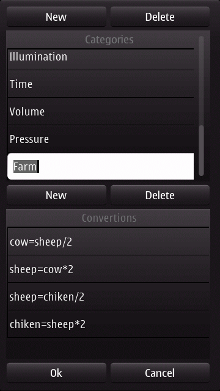

Yuc - Yet another Unit Converter
Convert a unit
Add unit convertions
Define unit name
Operators & Functions
FAQ
Contacts
Yuc - Yet another Unit Converter
Yuc is a universal unit converter.
You can fully costumize Yuc adding your own categories and unit convertions, in a very easy way, without any programming skills.
Convert a unit
-> Click on the Units button
-> then select a categorie
->
Tap the unit you want to convert ( Celsius in this example), then tap
the virtual keyboard. All other units are automatically converted.
You
can also use the phone default keyboard by double clicking the column
in front of Celsius, if you do so, when you're done you'll have
to tap the update button to convert the units.
Add unit convertions
Lets have a look at a insane example to teach you to add your own units.
Suppose you are a farmer that trades cows, sheeps and chikens with your neighbors: 1 cow worth 2 sheep, 1 sheep worth 2 chiken.
You need a fast way to convert the value of cows, sheep and chiken.
Tap Settings->Edit Units, it will display a list of Categories and a list of Units.
You can add, edit or delete the categories and the respective unit convertions.
-> Tap the "New" button (above the Categories list), and create a category named Farm
-> Tap "New" (above Convertions list) and create the convertions between cows, sheep, and chiken:
cow=sheep/2
sheep=cow*2
sheep=chiken/3
chiken=sheep*2

Yuc automatically detects that cow, sheep and chiken ... are units. Your done, just tap "Ok".
Now you will see that Farm is added to the list of Categories when you tap the "Unit" button, so just start converting
In a real life convertion unit, you would use your web search engine to find the convertion formulas. Then make sure you follow the convertion formula rules:
1) use equations, the first term should only have the unit name, the second term should have the formula with the other unit
2) unit names can have only letters, numbers and underscores, must start always with a letter, and are case sensitive
The next following example would work:
m_unit1 = 5*(m_unit2-3.45)+3
but for a full convertions between the both units you would have to provide the inverse convertion
m_unit2 = (m_unit1 - 3)/5+3.45
In this Farm example, please also note that there isn't any convertion formula defined between cow and chiken.
Yuc is smart enought to figure it out since there is convertions between cow and sheep, and sheep and chiken.
This
iterative algorithm will save you a lot of trouble, so you'll not have
to define all the possible convertion formulas between all units.
Define unit name
Unit names must always start with letters, and can contain, numbers and underscore caracter, and can have any lenght.
Possible valid unit names:
x
y
m_unit1
When adding units like m/s (meter per second) you cannot name the unit:
m/s - invalid
you have to use names like
meter_per_second
or
meter_second
or
m_s
Yuc uses a math engine, so there are reserved words that you cannot use for unit names:
i
e
E
sin, cos, tan, cot, ..., asin, acos, .....
and other trigonometric functions name are not allowed.
Operator & Functions
Yuc supports the following operators:
+
-
*
/
( )
E
^
Convertion examples:
unit_1 = 2*(unit_2+5)^3
unit_1 = -unit_2+ 2E-3
Yuc also supports trigonometric, logarithmic and other functions:
abs, acos, acosh, acot, acoth, acsc,
acsch, asec, asech, asin, asinh, atan,
atanh, cbrt, cos, cosh, cot, coth
csc, csch, exp, ln, log, sec, sech
sin, sinc, sinh, sqrt, tan, tanh
Convertion examples:
y = cos(x)
x = acos(y)
FAQ
Q: I'm not sure how to add a unit convertion I need, I don't know the formula
A: Just google the convertion formula, then check "Add unit convertions"
in the Help. Also when tapping Settings->Edit units you will see all
the real convertion formulas that Yuc uses. This are the best examples.
Q: Yuc is in English only, I want to use formulas in my main language
A: No problem. You can tap Settings->Edit Units , and change the names of the Categories and the unit names.
For example, you can change the category "Energy" name to portuguese "Energia" or wahtever name you want.
You
can also change the unit names. For example, in the Time category, you
can change the unit "s" to "second", "min" to "minute" or to your local
language.
Just make sure you change the unit name in all convertions
in the list (don't forget names are case sensitive) and that you follow
the names rules or you may end up breaking something.
Q: I accidentally deleted a unit or a category, can I restore it ?
A:
In the button Settings->Reset, you can reset all your unit
convertions to factory default. Be ware that you'll loose all the
units you may have add so far. Also you should ask yourself if you
really need that unit. The power of Yuc is that it is fully
customazible, you can delete, change and add units and categories,
according to your needs.
Contacts
Email: joaodeusmorgado@yahoo.com
Web: http://soft-ingenium.planetaclix.pt/